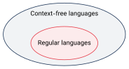
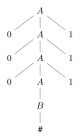
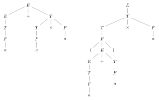
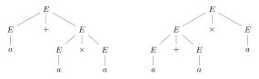

گرامرهای مستقل از متن
دیدیم که زبانهایی مثل منظم نیستند. در این بخش ابزار قویتری معرفی میکنیم: گرامرهای مستقل از متن (Context-Free Grammars). این گرامرها زبانهای مستقل از متن (Context-Free Languages) را تولید میکنند که شامل همه زبانهای منظم و زبانهای دیگری مثل هستند. کاربرد مهم آنها در طراحی زبانهای برنامهنویسی و ساخت تجزیهگر (parser) کامپایلرهاست: ابزارهای ساخت تجزیهگر، گرامر مستقل از متن زبان را میگیرند. در فصلهای بعد ماشین معادل این گرامرها، یعنی ماشین پشتهای، را هم میبینیم.

۹.۱گرامر و اشتقاق#
یک گرامر از این بخشها تشکیل شده است:
- مجموعهای از قاعدهها (قواعد جایگزینی). هر قاعده یک خط است: یک متغیر، یک پیکان و یک رشته از متغیرها و پایانهها.
- متغیرها، که معمولاً با حروف بزرگ نشان داده میشوند.
- پایانهها، که شبیه الفبا هستند و معمولاً با حروف کوچک، اعداد یا نمادهای خاص نشان داده میشوند.
- یک متغیر شروع، که معمولاً سمت چپ اولین قاعده است.
مثال ۹.۱ (گرامر ).
متغیرها و ، پایانهها ، و و متغیر شروع است.
گرامر همه رشتههای زبانش را با اشتقاق (Derivation) تولید میکند:
- متغیر شروع را بنویسید.
- یک متغیر از رشته فعلی و قاعدهای که با آن متغیر شروع میشود را انتخاب کنید و متغیر را با سمت راست قاعده جایگزین کنید.
- تا وقتی متغیری باقی مانده، به گام ۲ برگردید.
مثلاً اشتقاق رشته در :
همین اطلاعات را میتوان با یک درخت تجزیه (Parse Tree) نشان داد. ریشه متغیر شروع است، هر متغیر فرزندانی دارد که سمت راست قاعده بهکاررفته هستند و برگها، اگر از چپ به راست خوانده شوند، رشته مشتقشده را میسازند:

مجموعه همه رشتههایی که یک گرامر تولید میکند، زبان گرامر است. مثلاً . چند قاعده با سمت چپ یکسان را با («یا») خلاصه میکنیم: .
مثال ۹.۲ (بخشی از زبان انگلیسی). گرامر بخش کوچکی از زبان انگلیسی را توصیف میکند (متغیرها را بین مینویسیم):
یک اشتقاق برای جمله «a boy sees»:
۹.۲تعریف صوری#
یک گرامر مستقل از متن (CFG) یک چهارتایی است که در آن
- مجموعهای متناهی از متغیرها،
- مجموعهای متناهی از پایانهها است و ،
- مجموعهای متناهی از قاعدهها است؛ هر قاعده یک متغیر و یک رشته از متغیرها و پایانههاست، یعنی ،
- متغیر شروع است.
«مستقل از متن» یعنی سمت چپ هر قاعده فقط یک متغیر است. پس هر وقت متغیر را ببینیم، میتوانیم آن را بدون توجه به اطرافش (متنی که در آن قرار دارد) جایگزین کنیم.
اگر رشتههایی از متغیرها و پایانهها باشند و یک قاعده باشد، میگوییم نتیجه میدهد و مینویسیم . اگر یا دنبالهای وجود داشته باشد، میگوییم مشتق میکند و مینویسیم . زبان گرامر:
مثال ۹.۵. گرامر را در نظر بگیرید. اجزای آن: ، ، و متغیر شروع . این گرامر زبان را تولید میکند که منظم نیست. پس زبانهای مستقل از متن از زبانهای منظم بیشترند.
نکته. هر گرامر خطی راست (فصل ۷) یک گرامر مستقل از متن است، چون سمت چپ قاعدههایش یک متغیر است. پس هر زبان منظم مستقل از متن است.
مثال ۹.۶ (پرانتزهای متوازن). زبان همه رشتههای پرانتزهای درست تودرتو را تولید میکند، اگر را «» و را «» بخوانیم: . مثلاً .
مثال ۹.۷ (پالیندرومهای زوج). زبان را تولید میکند. هر قاعده یک نماد را همزمان در ابتدا و انتها میگذارد.
مثال ۹.۸ (عبارتهای حسابی). گرامر بخشی از یک زبان برنامهنویسی است:
درخت تجزیه معنی عبارت را نشان میدهد. در شکلهای زیر ، و به جای ، و آمدهاند. در ضرب پایینتر از جمع است، یعنی اول انجام میشود. در پرانتز جمع را پایینتر میبرد:

۹.۳ابهام#
گاهی یک گرامر یک رشته را به چند روش تولید میکند. به چنین رشتهای مبهم میگوییم. اگر رشته چند درخت تجزیه متفاوت داشته باشد، چند معنی متفاوت دارد، که در کاربردهایی مثل زبان برنامهنویسی مشکلساز است.
مثال ۹.۹ (یک گرامر مبهم).
رشته در دو درخت تجزیه دارد: در درخت چپ ضرب زودتر انجام میشود () و در درخت راست جمع ():

گرامر همین زبان را بدون ابهام تولید میکند.
دو اشتقاق مختلف ممکن است فقط در ترتیب جایگزینی فرق داشته باشند و درخت تجزیه یکسانی بسازند. برای اینکه ابهام را به درخت (ساختار) مربوط کنیم نه به ترتیب، ترتیب را ثابت میکنیم:
در اشتقاق چپترین در هر گام چپترین متغیر باقیمانده جایگزین میشود. رشته بهطور مبهم در گرامر تولید میشود اگر دو اشتقاق چپترین متفاوت (یا معادلاً دو درخت تجزیه متفاوت) داشته باشد. گرامر مبهم است اگر دستکم یک رشته را بهطور مبهم تولید کند.
مثال ۹.۱۱. دو اشتقاق چپترین برای در ( به جای ):
به جای چپترین میتوان از اشتقاق راستترین هم استفاده کرد (در هر گام راستترین متغیر جایگزین شود)؛ تعریف ابهام تغییر نمیکند:
مثال ۹.۱۲ (گرامر انگلیسی مبهم است). جمله «the girl touches the boy with the flower» در دو درخت تجزیه دارد. در یکی، with the flower بخشی از گروه اسمی the boy with the flower است (پسری که گل دارد). در دیگری بخشی از گروه فعلی است (دختر با گل پسر را لمس میکند):
- و ؛
- و .
مثال ۹.۱۳ (مشکل else آویزان).
رشته if then if then else دو اشتقاق چپترین دارد. در اولی else به if درونی تعلق دارد (قاعده اول برای if بیرونی و قاعده دوم برای درونی) و در دومی به if بیرونی (برعکس). این دو برنامه رفتار متفاوتی دارند. زبانهای برنامهنویسی معمولاً با یک قانون اضافه («else به نزدیکترین if تعلق دارد») این ابهام را رفع میکنند.
زبانی که هیچ گرامر غیرمبهمی برای آن وجود نداشته باشد ذاتاً مبهم است.
مثلاً زبان ذاتاً مبهم است: هر گرامری برای آن، دستکم یکی از رشتههای را به دو روش تولید میکند (یک بار به عنوان و یک بار به عنوان ). اثبات دقیق این ادعا دشوار است و در این درس نمیآید.
نکته. تشخیص اینکه یک گرامر مستقل از متن مبهم است یا یک زبان ذاتاً مبهم است، تصمیمناپذیر است: هیچ الگوریتمی وجود ندارد که برای هر گرامری در زمان متناهی جواب درست «بله» یا «نه» بدهد. (معنای دقیق تصمیمناپذیری را در بخش چهارم میبینیم.)
- CFG چهارتایی است و سمت چپ هر قاعده یک متغیر است.
- اشتقاق (، ) و درخت تجزیه دو روش نمایش تولید یک رشتهاند. .
- زبانهای منظم زیرمجموعه سره زبانهای مستقل از متناند ( مستقل از متن است ولی منظم نیست).
- گرامر مبهم یک رشته را با دو اشتقاق چپترین متفاوت تولید میکند. بعضی زبانها ذاتاً مبهماند و تشخیص ابهام الگوریتم ندارد.